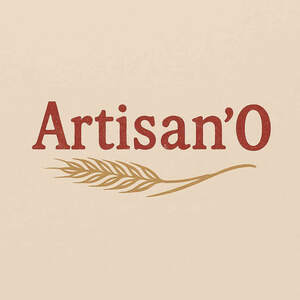

Trade Mark Journal No.2025/040 3 October 2025
UK00004268020 23 September 2025 (30,32,33)

- Class 30
- Coffee beverages with milk; Coffee; Bread; Chocolate coffee; Soda bread; Fruit bread; Coffee drinks; Mixtures of malt coffee with coffee; Coffee beverages; Malt coffee; Malt bread; Currant bread; Chocolate for confectionery and bread; Wine vinegar; Coffee substitutes [artificial coffee or vegetable preparations for use as coffee]; Unfermented bread; Tea beverages with milk; Coffee beans; Flavoured coffee; Bread pudding; Coffee essences for use as substitutes for coffee; Garlic bread; Toasted bread; Bread flavored with spices; Bread (Ginger -); Ginger bread; Coffee extracts for use as substitutes for coffee; Beverages made from coffee; Beverages made of coffee; Danish bread; Rye bread; Bread flavoured with spices; Mixtures of malt coffee extracts with coffee; Chocolate beverages with milk; Iced coffee; Bread with soy bean; Roasted barley and malt for use as substitute for coffee; Beverages with coffee base; Beverages with a coffee base; Roasted coffee beans; Coffee flavorings; Cocoa beverages with milk; Chocolate pastries; Mixtures of malt coffee with cocoa; Gluten-free bread; Coffee flavourings; Fresh bread; Bread made with soya beans; Bread with sweet red bean; Coffee based drinks; Ice beverages with a coffee base; Multigrain bread; Drip bag coffee; Prepared coffee beverages; Wholemeal bread; Mixtures of coffee and malt; Chicory for use as substitutes for coffee; Coffee [roasted, powdered, granulated, or in drinks]; Chocolate spreads for use on bread; Coffee bags; Coffee based beverages; Coffee oils; Flavourings of tea for food or beverages; Tea beverages; Substitutes (Coffee -); Coffee substitutes; Decaffeinated coffee; Roasted barley tea; Bread and buns; Chicory [coffee substitute]; Prepared coffee and coffee-based beverages; Bread buns; Naan bread; Sugar-coated coffee beans; Coffee, teas and cocoa and substitutes therefor; Biscuits for cheese.
- Class 32
- Barley wine [Beer]; Barley wine [beer]; Non-alcoholic wine; Non-alcoholic beverages flavoured with coffee; Non-alcoholic beverages flavored with coffee; Grape juice beverages; Brown rice beverages other than milk substitutes; Non-alcoholic soda beverages flavoured with tea; Non-alcoholic fruit vinegar beverages.
- Class 33
- Wine; Fruit wine; Strawberry wine; Grape wine; Cooking wine; Sparkling fruit wine; Sweet wine; Mulled wine; White wine; Sparkling grape wine; Yellow rice wine; Blackberry wine; Beverages containing wine [spritzers]; Red wine; Wine punch.
Marius Note